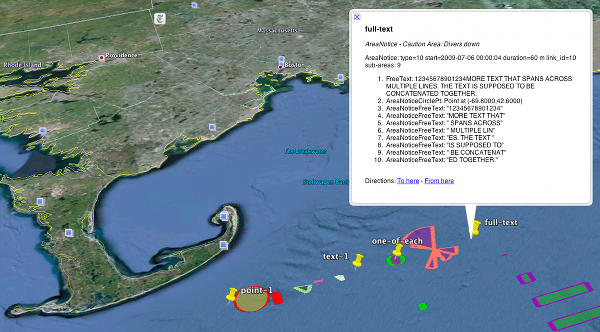
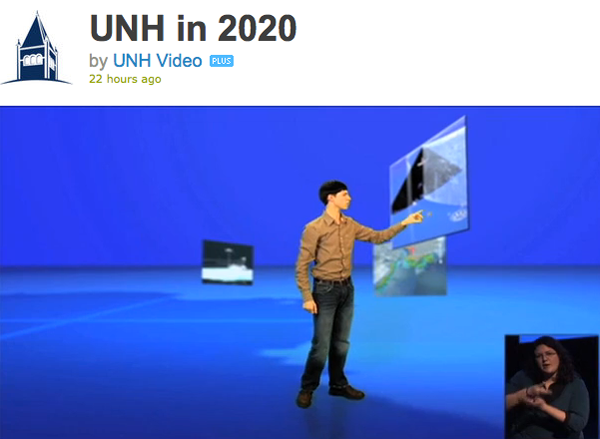
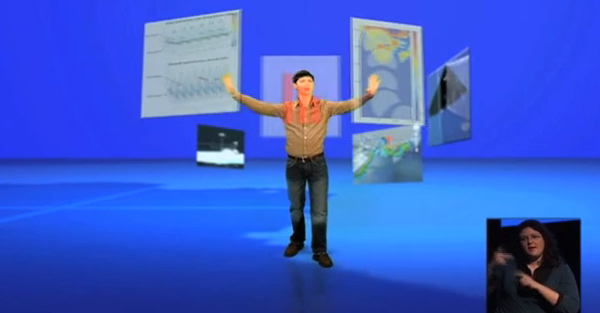

02.22.2010 08:51
AMQP messaging in fink
I need a solid messaging framework for one of my projects. I've used
NDDS (now DDS), RTC (an CMU thing), Pyro, and a few others in the
past. I want something simple, but that buys me more than just
managing TCP or UDP myself. I looked at Jabber/XMPP a bit, but then
started reading about AMQP, which sounds attractive, especially with
the option to allow for keeping messages through a system crash.
I spent some time with various implementations of AMQP with not much success. I avoided RabbitMQ because it is based on Erlang which is not something I am used to. I tried these two, but got frustrated with the code bases. I don't have time to get them to build reasonably on the Mac with fink. I ended up packaging these into fink:
For general background, I read Rabbits and Warrens and watched this video, but is not the best for seeing the figures, but it does give a kickstart. The slides get better about 20 minutes in.
I spent some time with various implementations of AMQP with not much success. I avoided RabbitMQ because it is based on Erlang which is not something I am used to. I tried these two, but got frustrated with the code bases. I don't have time to get them to build reasonably on the Mac with fink. I ended up packaging these into fink:
- RabbitMQ - Once I realized that I don't need to know Erlang to use it
- amqplib - basic python library
- carrot
- celery
For general background, I read Rabbits and Warrens and watched this video, but is not the best for seeing the figures, but it does give a kickstart. The slides get better about 20 minutes in.
02.18.2010 09:54
Automatically updating charts in ECDIS
Internet chart updates are a critical capability, but
I have two concerns with internet chart updates. The first is that
all of the bridge crew needs to be aware that the charts have been
updated. There does not appear to be a good way to tell what has
changed between chart updates and if the updates happen without some
of the bridge crew being aware, they may get a surprise at an
inopportune moment. The second concert is with ECDIS systems running
on MS Windows - internet updating should be an issue with respect to
viruses, but the track record of the Windows community is that this
should be a concern. I still can't believe that large ships run with
windows as the OS for life critical operations. I've run linux boxes
for as long as 2 years without a need for a reboot or update for as
much as 2 years... right on a bare internet connection with no viruses
or troubles with hackers.
From Digital Ship, Mar 2010, "Out of date charts lead to accidents":
From Digital Ship, Mar 2010, "Out of date charts lead to accidents":
... IMO's push for e-Navigation and the introduction of a mandatory carriage requirement for ECDIS (electronic chart display and information system) from 2012 could help to reduce the possibility of vessels sailing with charts that do not represent the most accurate and up-to- date representation of their navigational environment. The transmission of digital chart data, whether by satellite or using other broad- cast systems, is quite obviously the fastest way of getting the latest corrections on to a vessel bridge. ...
02.17.2010 16:21
ais-areanotice-py 0.2
I've been working on improving the ais-areanotice-py reference
implementation of the NAV55 proposed AIS Binary Message for Area
Notices. Version 0.1 was seriously buggy. Thanks to Brad for being
the first to submit bug reports. He pointed out all sorts of
unpleasant things. I bit the bullet and started dog
fooding what I produce. I've implemented decoders for everything
but the polylines and polygons that span more than one sub-area. There
are lots of changes and at this point, I think this is the beginnings
of a reasonable test data set. Please try this! I really need testing and feedback.
Software is available under downloads and the test data under samples.
Software is available under downloads and the test data under samples.

02.16.2010 17:41
NAIS data release RFC
I submitted my comments for the USCG RFC about NAIS data release. I
hope many other people did to. It's important to engage the
government in these types of discussions. So far, I know one other
person who has submitted comments:
ESR: Comment to USCG on NAIS policy
Let me know if there are others. I've put mine up in a place that has comments. Feel free to agree, disagree, etc. This topic is really worthy of a whole series of papers, but this is all I can muster right now.
USCG Request For Comment on NAIS data release
The summary:
ESR: Comment to USCG on NAIS policy
Let me know if there are others. I've put mine up in a place that has comments. Feel free to agree, disagree, etc. This topic is really worthy of a whole series of papers, but this is all I can muster right now.
USCG Request For Comment on NAIS data release
The summary:
My overall opinion is that the only increased risk from releasing raw AIS data comes from the economic impact to those who are trying to sell AIS feeds. Outside of the 3 or 4 groups doing Satellite based AIS, I don't think these companies should get protection. There is already stiff competition, e.g. AIS Hub will give you AIS data for free if you contribute back at least a little bit of data. AIS receivers start from about $190. The real value comes from interpretation - analysis and display of these feeds. More access to AIS data means to me that we will get more people involved in analysis and it will speed the uptake of AIS binary messages. As for security, if the USCG needs to keep this data restricted as sensitive, then it should not have been broadcast in the clear to start with. Hiding addressed messages is strange when anyone with a receiver and gpsd can see most of these addressed messages anyway.
02.16.2010 08:07
Open Street Map (OSM) Haiti edits
This shows the power of an open system doing what it is supposed to do
in the event of an emergency. Hats off to all who contributed.
OpenStreetMap - Project Haiti from ItoWorld on Vimeo.
02.11.2010 09:04
Portsmouth, NH pilots
Pilots
of the Piscataqua: Special skills needed to steer ships through
complicated waterway ]Fosters]
... "You have this massive volume of water that wants to go in and come back out and the only way to do that is through the main part of the river," Johnson said. "There's some pretty wild forces out there. For moving ships here we do everything we can to try and utilize the tide and the current to our advantage. ... The narrowness of the river mixed with its shallow depth and winding nature have forced pilots to develop what he calls a "matrix" for moving ships in and out of the river. He credits his predecessors for developing the system, but acknowledges that when you're at the mercy of Mother Nature, the rules change daily. ...
02.10.2010 11:09
Danny Brothers speaking at CCOM this Friday
Danny and I were grad students together in the Driscoll Chirp Lab at
SIO.
CCOM/JHC SEMINAR SERIES FRIDAY, February 12, 2010 3:00 pm Chase Ocean Engineering Lab, Rm 130 Danny Brothers Mendenhall Postdoc Fellow, US Geological Survey, Woods Hole, MA Marine Paleoseismology and Paleoclimate: Insights from Lake Tahoe and Salton Sea, California Ongoing studies in the Lake Tahoe Basin (LTB) and Salton Sea are aimed at understanding earthquake history across submerged and active faults. In the LTB, a suite of marine geophysical data (sub-bottom CHIRP, sidescan sonar and multibeam bathymetry) and piston cores were used to define the timing and magnitude of the most recent earthquake on the West Tahoe Fault. However, surveys revealed an ancillary, but fascinating, discovery. A group of submerged, upright trees were discovered and radiocarbon dated to ~1250 AD. Dendrochronology of wood samples and water balance calculations suggest the LTB experienced severe, multicentennial drought during medieval times. Similar methods were applied in the Salton Sea, California, where the San Andreas Fault (SAF) terminates and transfers strain across a series of short, extensional faults to the Imperial Fault. The southernmost SAF has not ruptured in over 300 years and is considered ‘overdue’ for a large-magnitude earthquake. To understand the hazards in the region, we collected >1,000 line-km of seismic CHIRP profiles in the Salton Sea to define the sedimentary and earthquake history along the submerged faults. Our observations suggest faults in the Salton Sea can potentially generate M6-6.6 earthquakes every 150 years or so, which could act as stress modulators on the southern San Andreas Fault. Furthermore, based on the relationship between Holocene flooding surfaces and fault displacements, it appears that some ruptures are synchronous with Colorado River floods into the basin. Flooding increases both the vertical load and pore pressure on faults making them more inclined to fail. All are welcome to attend. Center for Coastal and Ocean Mapping 24 Colovos Road Durham, New Hampshire 03824
02.08.2010 06:47
A simple Django command line program (django "admin" command)
I want to be able to run some Django code from a cron job to update a
database. I looked at Django Cron, but then
thought about the admin commands and realized that was a better route
to my goal. Here is the basic route that I tool:
django-admin.py startproject projname cd projname python manage.py startapp myapp # Edit settings.py to add myapp to the INSTALLED_APPS cd myapp mkdir -p management/commands touch management/__init__.py touch management/commands/__init__.py cd management/commands/Now create your command:
import django.core.management.base as base
class Command(base.NoArgsCommand):
help = 'Describe the Command Here'
def handle_noargs(self, **options):
print 'hello world'
print options
Now give it a try:
cd ../../.. # back to the project directory python manage.py help Type 'manage.py helpThat's it. Now I have a command (that doesn't really do anything yet) that I can put in my crontab.' for help on a specific subcommand. Available subcommands: cleanup compilemessages ... flush hello_world inspectdb loaddata ... python manage.py hello_world hello world {'pythonpath': None, 'verbosity': '1', 'traceback': None, 'settings': None}
02.05.2010 16:36
Deep ROV and AUV vehicles
We just had Dana Yoerger from WHOI give seminar about ABE, SENTRY, and NEREUS exploring the deep. He mentioned a video of deep underwater volconism that sounded pretty exciting, so I went hunting and found this: an eruption at 4000 feet (1200 m).
02.03.2010 21:51
UNH Stategic Plan
CCOM has several images that were used in the strategic plan
presentation this week by the President of UNH.
In this first image, the student is pointing at GeoZui4D image of EK60 and DeltaT sonars with whales visible in the mid-water multibeam data created by Roland. On the left is an image also from GeoZui, but it is hard to make out.
In this next image, the student is touching with his left hand (on our right) a risk analysis of grounding for a ship entering the Portsmouth, NH harbor done by Brian Calder.
The above images are 14 minutes into the video:
In this first image, the student is pointing at GeoZui4D image of EK60 and DeltaT sonars with whales visible in the mid-water multibeam data created by Roland. On the left is an image also from GeoZui, but it is hard to make out.

In this next image, the student is touching with his left hand (on our right) a risk analysis of grounding for a ship entering the Portsmouth, NH harbor done by Brian Calder.

The above images are 14 minutes into the video:
UNH in 2020 from UNH Video on Vimeo.
02.03.2010 12:38
CCOM on the Google Lat Lon blog
We've been working with Jamie at Google to get the data into Google
Earth. Jamie discovered several bugs in tools that we were using to
get the data out. Note that a lot of other CCOM data is already
in Google Earth, but comes up as "NOAA".
Wander the seafloor like never before [Google Lat Long blog]
Wander the seafloor like never before [Google Lat Long blog]
... Several organizations have provided their ship-collected data for publication in Google Earth to improve our undersea maps. The Center for Coastal and Ocean Mapping - Joint Hydrographic Center, has shared large swaths of underwater depth data collected from their expeditions north of Pt. Barrow, Alaska into the Arctic. The Living Oceans Society has shared their surveys off of the west coast of British Columbia, Canada, so you can now zoom around the Oglala seamount ...
02.01.2010 11:26
gdal 1.7.0 with new drivers
The announcement: GDAL/OGR 1.7.0 Released. All the details turns out to be a very long list: 1.7.0-News
The summary of changes:
Fink has not been updated to this version. Make sure that you are up to date on libgeos3 (current is 3.2.0).
The summary of changes:
- New Raster Drivers: BAG, EPSILON, Northwood/VerticalMapper, R, Rasterlite, SAGA GIS Binary, SRP (USRP/ASRP), EarthWatch .TIL, WKT Raster
- GDAL PCIDSK driver using the new PCIDSK SDK by default
- New Vector drivers : DXF, GeoRSS, GTM, PCIDSK and VFK
- New utilities: gdaldem, gdalbuildvrt now compiled by default
- Add support for Python 3.X. Compatibility with Python 2.X preserved
- Remove old-generation Python bindings.
- Significantly improved raster drivers: GeoRaster, GeoTIFF, HFA, JPEG2000 JasPer, JPEG2000 Kakadu, NITF
- Significantly improved vector drivers: CSV, KML, SQLite/SpataiLite, VRT
Fink has not been updated to this version. Make sure that you are up to date on libgeos3 (current is 3.2.0).